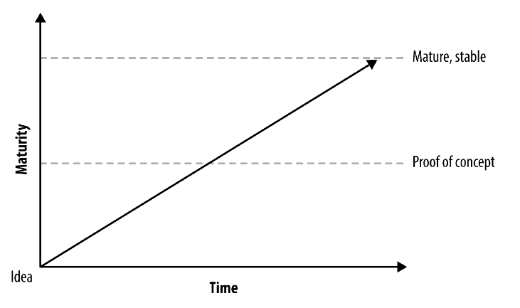
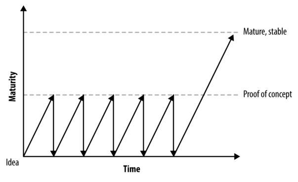
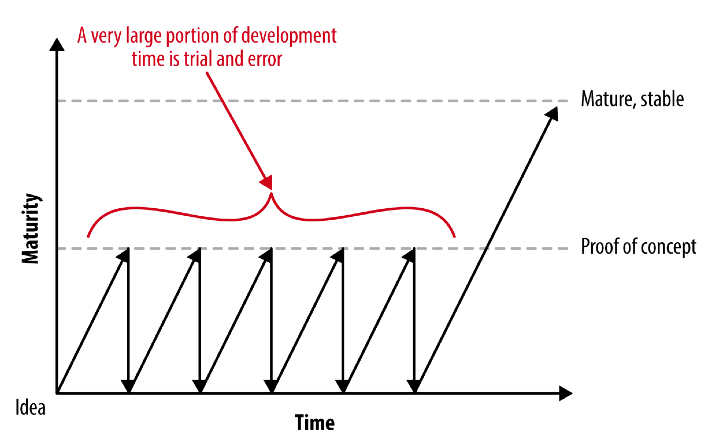

Um produto mínimo viável (MVP) não é um produto, é um processo 0
by Jim Brikman
“Você sabe aquele velho ditado sobre um avião voando da Califórnia para o Havaí estar fora do curso 99% do tempo - mas corrigindo constantemente? O mesmo é verdade para startups de sucesso - exceto que podem começar rumo ao Alasca. ” —- Evan Williams
É a mesma história de novo e de novo. Primeiro, uma equipe tem uma ideia.
Em seguida, eles constroem um produto mínimo viável (MVP) como uma prova de conceito, gastando muito tempo discutindo sobre quais recursos incluir ou excluir do MVP.
Finalmente, se o MVP funcionar bem, eles planejam construir o produto completo, maduro e estável.
Então, o que há de errado com essa imagem? Por que tudo dá errado para tantas startups?
O problema é que essas equipes não entendem o que é um MVP. Um MVP não é apenas um produto com metade dos recursos eliminados ou uma maneira de lançar o produto um pouco mais cedo. Na verdade, o MVP não precisa ser um produto. E não é algo que você constrói apenas uma vez e depois considera o trabalho concluído.
Um MVP é um processo que você repete continuamente: Identifique sua suposição mais arriscada, encontre o menor experimento possível para testar essa suposição e use os resultados do experimento para corrigir o curso.
Ao construir um produto, você faz muitas suposições. Você presume que sabe o que os usuários estão procurando, como o design deve funcionar, qual estratégia de marketing usar, qual arquitetura funcionará com mais eficiência, qual estratégia de monetização a tornará sustentável e quais leis e regulamentos você deve cumprir. Não importa o quão bom você seja, algumas de suas suposições estarão erradas. O problema é que você não sabe quais. 1
Em um post-mortem de mais de 100 startups, CB Insights descobriu que a causa número um de falha de inicialização (42% do tempo) era "nenhuma necessidade de mercado". Quase metade dessas startups passou meses ou mesmo anos construindo um produto antes eles descobriram que estavam errados em sua suposição mais central: que alguém estava interessado naquele produto em primeiro lugar.
A única maneira de descobrir isso - a única maneira de testar suas suposições - é colocar seu produto na frente de usuários reais o mais rápido possível. E, quando o fizer, muitas vezes descobrirá que terá de voltar à prancheta. Na verdade, você terá que voltar à prancheta não apenas uma vez, mas repetidamente.
Isso não é exclusivo do desenvolvimento de produtos. Quando você está escrevendo um livro ou ensaio, tem que produzir muitos rascunhos e gastar muito tempo editando. E quando você está escrevendo código,frequentemente tem que refatorar ou até mesmo reescrever o código. 2 Todo esforço humano criativo requer uma quantidade enorme de tentativa e erro.
Em um mundo de tentativa e erro, aquele que consegue encontrar os erros mais rápido vence. Algumas pessoas chamam essa filosofia de "falha rápido". No TripAdvisor, o chamávamos de “Velocidade vitoriosa”. Eric Ries chamou isso de Lean. Kent Beck e outros programadores o chamaram de Agile. Qualquer que seja o nome, o objetivo é descobrir quais de suas suposições estão erradas, obtendo feedback sobre seu produto de usuários reais o mais rápido possível.
Esteja você criando um produto, escrevendo um código ou elaborando um plano de marketing, você deve sempre se perguntar duas coisas:
- Qual é a minha suposição mais arriscada?
- Qual é o menor experimento que posso fazer para testar essa suposição?
MVP como um processo, em ação
Vamos ver um exemplo.
Você decide criar um produto que permite aos proprietários de restaurantes criar um aplicativo móvel para seus restaurantes com apenas alguns cliques. Terá uma interface simples de arrastar e soltar, um monte de modelos pré-construídos, um calendário de eventos, boletim nformativo, check-ins, galerias de fotos, bate-papo em tempo real, integração com sites de avaliação, redes sociais e Google Maps. E o mais importante, ele oferecerá uma maneira de fazer reservas, fazer pedidos de entrega e usar cupons, dos quais você receberá uma pequena parte como forma de monetizar seu produto. Isso vai ser incrível!
Você encontra alguns amigos para se juntar a você como co-fundadores e, se você for uma típica equipe de startups, vai arrecadar algum dinheiro, se trancar em uma sala por 12 meses e tentar construir todos esses recursos. Se você for um pouco mais experiente, irá cortar alguns recursos que não são essenciais para o primeiro lançamento, então você será capaz de lançar seu “MVP” em 8 meses em vez de 12.
E em ambos os casos, você provavelmente irá falhar.
Por quê? Bem, considere quantas suposições você está fazendo que podem se revelar desastrosamente erradas:
- Você passa meses descobrindo como lançar aplicativos móveis personalizados para seus clientes, apenas para descobrir que o que o proprietário de um restaurante realmente quer é um site otimizado para celular que seja fácil de encontrar no Google.
- Ou, depois de usar todas as tecnologias mais recentes para construir um bate-papo em tempo real, você descobre que os proprietários de restaurantes mal conseguem lidar com e-mail e não querem ficar sentados em frente ao computador o dia todo.
- Ou, pior de tudo, você pode descobrir que os proprietários de restaurantes não querem o incômodo de lidar com tecnologia e manter aplicativos móveis e não têm interesse em usar seu produto em primeiro lugar.
Esperar meses para descobrir essas falhas críticas é muito longo. Na melhor das hipóteses, perder tanto tempo é um desperdício enorme e, na pior, colocará sua empresa na falência. Nas palavras de Peter Drucker: "Certamente não há nada tão inútil quanto fazer com grande eficiência o que não deveria ser feito."
Vamos tentar a abordagem MVP como um processo e ver se podemos fazer melhor. Vamos construir o produto de forma incremental, em cada estágio perguntando:
- Qual é a minha suposição mais arriscada?
- Qual é o menor experimento que posso fazer para testar essa suposição?
No início, a suposição mais arriscada é provavelmente que os proprietários de restaurantes desejam criar aplicativos móveis.
Portanto, o primeiro MVP poderia ser uma maquete de um aplicativo móvel - talvez até mesmo um que você fez na parte de trás de um guardanapo de restaurante (que apropriado!) Vá até os proprietários de restaurantes em sua vizinhança e pergunte quais problemas eles têm com tecnologia. Eles já têm um aplicativo móvel? Se não, porque não? Eles querem um? Eles são muito experientes em tecnologia? Eles entendem os benefícios Mostre a eles sua maquete. Descubra se isso seria uma boa solução para seus problemas
Você pode descobrir que não há interesse suficiente dos proprietários de restaurantes para tornar este um negócio viável. É uma pena, mas a boa notícia é que tudo o que custou foram algumas horas de conversa, em vez de meses de desenvolvimento. Por outro lado, você pode descobrir que os proprietários de restaurantes não estão interessados em aplicativos móveis, mas em sites fáceis de criar. Isso é progresso!
Mas você ainda não terminou. Agora você deve repetir o processo para construir seu próximo MVP.
- Qual é a sua suposição mais arriscada?
Neste ponto, é provável que os proprietários do restaurante estejam realmente dispostos a pagar por tal site. Qual é o menor experimento para testar essa suposição? Uma ideia para o próximo MVP pode ser criar sites estáticos manualmente para alguns dos proprietários de restaurantes que expressaram interesse e ver como eles respondem. 3 Eles gostam? Ficaram impressionados com o fato de o site já estar pronto? Quanto eles pagariam para ter um site assim lançado hoje?
Talvez, quando confrontado com a perspectiva imediata de gastar dinheiro, você descubra que os proprietários do restaurante não estão realmente interessados. Bem, que bom que você aprendeu isso com apenas alguns dias de trabalho, em vez de perder meses de desenvolvimento.
Ou talvez você descubra que eles estão dispostos a pagar. Então você aceita o pagamento por alguns meses de serviço em dinheiro ou cheque (para não perder muito tempo construindo um sistema de cobrança), lança seus sites e pede para que eles enviem um e-mail se precisarem atualizar alguma informaçao no site. Sim, isso envolve muito esforço manual de sua parte. Não, isso não aumentará se o número de clientes aumentar. Mas quando você é uma pequena startup, não tenha medo de fazer coisas que não escalam. O dimensionamento é um bom problema, pois significa que você construiu algo que vale a pena dimensionar.
Mas enquanto isso, você precisa repetir o processo MVP mais uma vez.
- Qual é a sua suposição mais arriscada?
Nesse ponto, pode ser que sua estratégia de marketing funcione. Você não pode ir pessoalmente a todos os restaurantes do mundo. Qual é o menor experimento que você pode fazer para testar essa suposição? Seu MVP pode ser uma página de destino que descreve o que seu produto fará, mostra os sites de restaurantes que você construiu manualmente antes e permite que os visitantes forneçam seus endereços de e-mail se estiverem interessados em ouvir mais quando você o lançar. Você pode então comprar algumas centenas de dólares em anúncios no Google, Facebook, Twitter ou LinkedIn para direcionar o tráfego para sua página de destino e ver o que acontece. 4
Se os usuários em potencial nem mesmo fornecerem seus endereços de e-mail, provavelmente eles também não fornecerão dinheiro. É muito mais fácil descobrir isso ajustando algum texto e algumas imagens em uma página de destino do que reescrevendo milhares de linhas de código no produto completo! Quanto mais cedo você encontrar os erros, menos tempo será perdido construindo a coisa errada.
Este é, em poucas palavras, o processo MVP. Esteja você desenvolvendo um design de produto, um plano de marketing ou escrevendo um código, sempre pergunte:
- Qual é a minha suposição mais arriscada?
- Qual é o menor experimento que posso fazer para testar essa suposição?
Yevgeniy (Jim) Brikman é o autor de Hello, Startup e fundador da Atomic Squirrel, uma empresa especializada em ajudar novas startups a decolar. Anteriormente, ele passou mais de uma década no LinkedIn, TripAdvisor, Cisco Systems e Thomson Financial. Ele é bacharel e mestre em Ciência da Computação pela Cornell University.